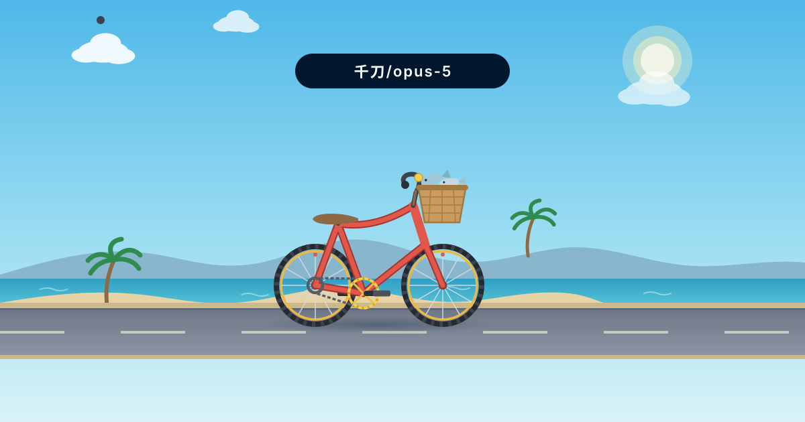
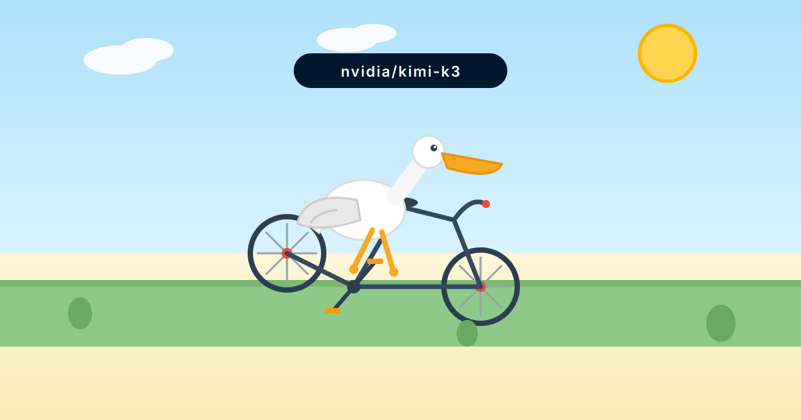
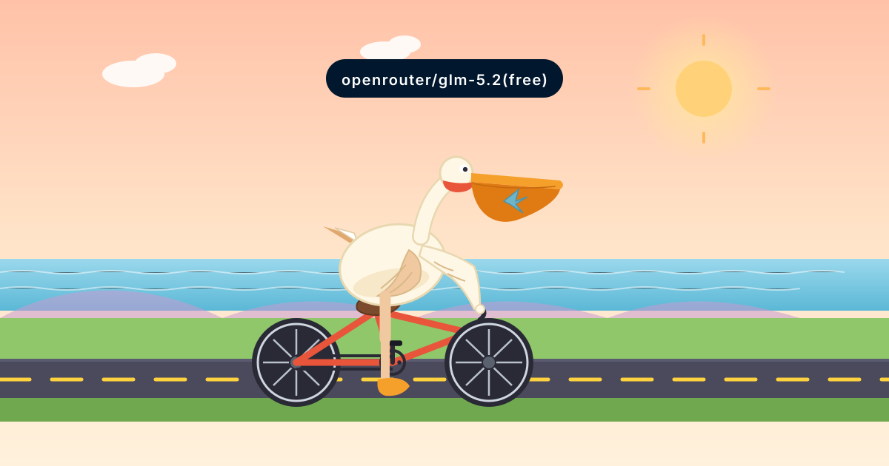

鹈鹕测试
🦩 鹈鹕骑车提示词
创建一个HTML，内容是SVG绘制一个鹈鹕骑自行车的2D动画
同一个提示词喂给不同模型，纯 SVG + CSS 动画，无外部依赖

鹈鹕骑车 · 千刀/opus-5
千刀/opus-5 生成。2-Leg IK 解算、视差卷轴、齿比 2:1、带安全帽的鹈鹕沿海岸线骑行，海浪、沙滩、棕榈树。

鹈鹕骑车 · nvidia/kimi-k3
nvidia/kimi-k3 生成。蓝天下白色鹈鹕骑自行车从右向左横穿画面，车轮、腿、翅膀、头独立动画。

鹈鹕骑车 · openrouter/glm-5.2(free)
夕阳海边的鹈鹕骑橙色自行车：轮子、曲柄、腿 IK 24 步关键帧、嗉囊晃动、围巾飘带、背景视差、风线、阳光脉动，还自带 Web Audio 合成配乐。